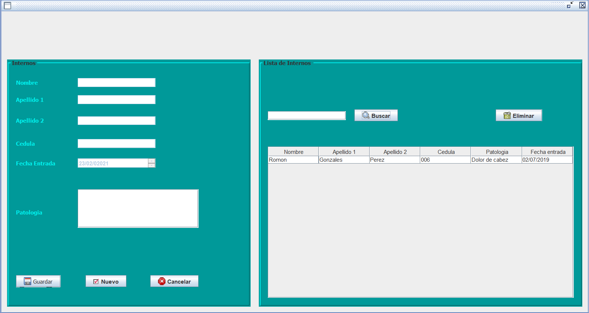

Login de acceso al sistema
Login de acceso al sistema al sistema de control de ventas, Restringido por usuario y contraseña
Panel principal

Panel principal de la aplicación, en el esta el nombre del usuario, además de un menú en la parte superior del panel, en donde dependiendo del usuario tendrá restricción para agregar, eliminar, modificar información del sistema
Ventana de administración
Ventana para administración de pacientes, entre ellos están: agregar un paciente, eliminar, modificar y dar de alta. La aplicación fue hecha con Java y archivos de texto plano